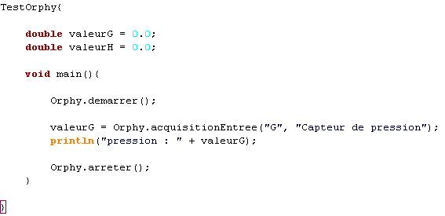

Java's Cool Guide Orphy : Code
Ce chapitre vous explique comment faire des acquisitions sur ORPHY en utilisant du code Java's Cool.
Corps du programme
Un programme utilisant ORPHY dans son code doit etre formé de la maniere suivante :
-ouverture d'orphy
-lecture du ou des entrées désirées, le temps et le nombre de fois que l'on veut
-fermeture d'orphy
Maccros
Vous avez à disposition 3 maccros Orphy :
-void demarrerOrphy(), qui permet de demarrer Orphy afin de l'utiliser.
-lireEntreeAnalogique(String entreeAnalogique, String type), permet de faire l'acquisition de l'entrée analogique
passée en paramètre de la fonction, ayant une sonde de type passé en paramètre. Les différents types de sondes reconnus sont
(bien faire attention à l'orthographe et aux majuscules) :"Thermometre", "Voltmetre", "Capteur de pression" et "Conductimètre".
-void arreterOrphy(), qui permet d'arreter Orphy quand on ne l'utilise plus(ATTENTION, ne pas oublier d'appeler cette fonction)
Reinitialisation
La fonction "reinitialiserOrphy" à été mise en place pour remettre la configuration d'orphy dans son état initial si vous rencontrez
des problèmes. Il faut appeler cette fonction si :
- vous avez stoppé un programme utilisant orphy avec le bouton STOP.
- si les valeurs fournies par Orphy ne semblent pas du tout coherentes.
Exemple
Voici un exemple de programme récupérant la valeur de l'entrée G ayant un capteur de pression branché :
